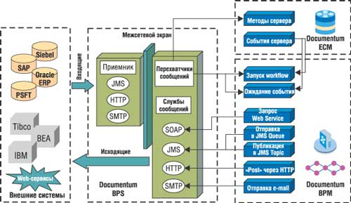

Андрей Николаев,
менеджер по продуктам и технологиям компании "Документум Сервисиз"
andrei.nikolaev@documentum.ru
Сегодня многие компании и предприятия осознали значимость управления корпоративным содержанием (Enterprise Content Management - ECM), придя к пониманию его как стратегического информационного ресурса. На таких предприятиях начали использовать специальное ПО, которое помогает собирать, организовывать, проверять, утверждать, безопасно хранить, находить, публиковать и повторно применять контент, а также гарантировать соблюдение норм регулирования. Однако не менее существенна в управлении корпоративным контентом та роль, которую он играет в бизнес-процессах предприятия. Ориентированные на содержание бизнес-процессы помогают оптимизировать производительность труда, снижать стоимость и длительность выполнения коммерческих операций и даже повышать эффективность и скорость совместной работы сотрудников.
Ориентированным на содержание называют такой процесс, в котором корпоративное содержание либо определяет ход процесса, либо выступает его результатом. В качестве примера можно привести процесс выдачи займа, который начинается с поступления заявления - документа, к которому прикладывают отчеты о кредитных операциях, об оценке стоимости имущества и другую информацию. Остальные документы, в том числе само долговое обязательство, создают уже после утверждения решения о выдаче займа. В таком процессе данные из документов извлекают и используют согласно автоматизированным бизнес-правилам. Исходные же документы оставляют неизменными, чтобы впоследствии применять их в других бизнес-процессах, запускаемых уже после завершения процесса выдачи займа, в том числе для обслуживания клиентов, аудита, проверки соблюдения норм регулирования и т. п.
Средств автоматизации бизнес-процессов, используемых в традиционных системах управления документами, вполне хватало, пока содержание поступало на предприятие в бумажном виде и во всех бизнес-процессах участвовали люди. Но как только документы, такие, как отчеты о кредитных операциях и оценке имущества, превратились в XML-сообщения, а из процессов попытались по возможности исключить выполняемые вручную операции, средства автоматизации бизнес-процессов, встроенные в платформы ECM, оказались неспособны обеспечить требуемую гибкость и открытость интеграционной архитектуры. В свою очередь, корпоративные системы класса Business Process Management (BPM), хотя и поддерживают анализ сообщений XML и автоматическое извлечение из них данных, обычно не способны управлять полученными XML-сообщениями на протяжении длительного периода (при обслуживании клиентов, аудите и т. д.), т. е. не способны управлять корпоративным содержанием. Поэтому для автоматизации и поддержки таких важных ориентированных на содержание бизнес-процессов, как выдача займов, обработка заказов, подготовка технической документации и т. д., нужна расширяемая платформа, объединяющая возможности управления как корпоративным содержанием, так и бизнес-процессами.
Компания Documentum (http://www.documentum.com), известная своими продуктами в области управления корпоративным содержанием, представляет сегодня как раз такую платформу, в основу которой заложены недавно выпущенные продукты - менеджер бизнес-процессов Documentum Business Process Manager (BPM) и службы бизнес-процессов Business Process Services (BPS). Следует отметить, что Documentum уже давно предлагала средства автоматизации бизнес-процессов, тесно интегрированные с хранилищем Documentum и объектной моделью данных.
Documentum BPM и процессы, ориентированные на содержание
Для автоматизации процессов, ориентированных на содержание (таких, как выдача кредита, управление заказами, и других), решение Documentum BPM предоставляет три основные функции.
Поддержка любых типов процессов. Менеджер бизнес-процессов Documentum Business Process Manager поддерживает произвольное сочетание задач, выполняемых вручную и автоматически, - от полностью автоматизированной обработки до совместной деятельности специально сформированных команд сотрудников. Задачи процессов имеют доступ ко всем службам управления содержанием Documentum, включая стандартные функции управления документами, обработку изображений и управление отчетами, управление Web-контентом и мультимедийной информацией, а также доступ к задачам коллективной работы. Более того, BPM доступны готовые шаблоны задач, позволяющие интегрировать внутренние процессы с внешними системами без дополнительного программирования.
Обработка событий при управлении содержанием. Documentum BPM имеет возможность реагировать в режиме реального времени на события, происходящие во внешних системах. Если изменяется информация о заказчике, то, например, CRM-система может автоматически сформировать событие; то же самое может сделать и ERP-система, если на складе закончилась продукция. Эти системы должны знать, как другие системы будут использовать их события. Такой тип интеграции называется слабосвязанным, и его основная цель - сделать процессы более гибкими. ECM-системы формируют события, когда добавляется новый объект, изменяются метаданные, превышен срок хранения документа и т. д.
Интеграция приложений и процессов. Очень часто поиск и обновление данных во внешнем приложении реализуются программно с помощью библиотек API как самого внешнего приложения, так и инициирующей такую операцию системы. Таким способом удается обеспечить лишь "точечную" интеграцию, построить которую дорого, а обслуживать - практически невозможно. Службы Documentum Business Process Services построены на основе гибкой, расширяемой и удобной в обслуживании интеграционной архитектуры и современных стандартов BPM, открывающих преимущества использования XML, Web-сервисов, служб J2EE (таких, как JMS messaging). Поэтому с помощью Documentum можно интегрировать ориентированные на содержание процессы с внешними системами либо напрямую, либо через промежуточное ПО других производителей, в частности, IBM WebSphere MQ и BEA.
Все процессы, ориентированные на содержание, можно разделить на четыре основные категории: процессы жизненного цикла содержания, процессы с неизменяемым содержанием, процессы коллективной работы и фрагменты глобальных корпоративных бизнес-процессов.
Процессы жизненного цикла содержания
Процессы жизненного цикла содержания предполагают его создание, сборку, согласование, утверждение, публикацию, распространение и архивирование. Их основная цель - подготовка содержания и доведение его до пользователей (рис. 1). В качестве примеров процессов данной категории можно привести разработку и поддержку Web-сайтов, технической или отчетной документации, маркетинговых материалов. Именно поддержке таких процессов уделяется особое внимание в традиционных системах управления содержанием, и компания Documentum с самого начала ориентировалась именно на эту область автоматизации.
| Рис. 1. Типовой процесс управления жизненным циклом содержания - подготовка пресс-релиза.
|
Процессы с неизменяемым содержанием
Такие процессы, как управление заказами, оплата счетов, гарантирование займов и обслуживание клиентов, обычно запускаются при поступлении определенного документа - заказа, запроса, счета, жалобы, заявки. Все это документы с неизменяемым, или фиксированным, содержанием. Фиксированное содержание не подлежит редактированию или исправлению, но содержит информацию, определяющую движение процесса, и его обычно требуется сохранить для дальнейшего использования при обслуживании клиентов, аудите, контроле соблюдения норм регулирования и т. п. Примером подобного процесса может служить обработка изображений документов, если фиксированное содержание поступает в организацию в виде бумажного документа или по факсу. Однако сегодня фиксированное содержание все чаще представляет собой Web-формы, EDI, XML-сообщения или электронные письма.
Основная особенность решения Documentum заключается в том, что, помимо определения хода процесса, в зависимости от данных из получаемого XML-документа, платформа имеет возможность долгосрочно управлять этим документом как корпоративной (учетной) записью. Кроме того, возможен запуск этапов процесса в ответ на внешние события, что очень важно в процессах с фиксированным содержанием.
Процессы коллективной работы
ПО для управления коллективной работой, например, Documentum eRoom Enterprise, предоставляет единое рабочее пространство, к которому сотрудники могут при необходимости быстро обратиться, чтобы пообщаться с коллегами в режиме онлайн и совместными усилиями разрешить встающие перед ними проблемы, например, при выводе на рынок новых продуктов, выявлении ошибок в счетах, переговорах о цене и т. д. Объекты содержания, в том числе документы, дискуссии, опросы, таблицы данных, обеспечивают среду коллективной работы. В Documentum BPM за счет интеграции eRoom со структурированными процессами предлагается новая модель сотрудничества - eRoom может выступать в качестве задачи или подпроцесса более крупного процесса BPM, и наоборот, структурированный бизнес-процесс можно запустить из eRoom.
Содержание в глобальных корпоративных бизнес-процессах
Нередко встречаются ситуации, когда часть глобального корпоративного бизнес-процесса ориентирована на содержание. Следовательно, управление главным (сквозным) процессом необходимо интегрировать с управлением процессом, ориентированным на содержание. На рис. 2 приведен пример запуска новой продукции в крупной компании, выпускающей полупроводниковые приборы. Для управления сквозным процессом используется продукт Tibco, а для управления отдельными его компонентами - системы Agile Product Lifecycle Management, SAP Manufacturing Requirements Planning и Documentum BPM (для публикации технической документации). В определенной точке главного процесса средство управления корпоративными процессами Tibco запускает в Documentum цикл публикации технической документации. Для этого в очередь, контролируемую Documentum BPS, направляется соответствующее сообщение. Процесс Documentum подобным же образом использует BPS для отправки обратно в Tibco сообщений о таких событиях, как завершение процесса или прохождение промежуточных этапов. Каждая часть главного процесса оптимизирована по отдельности, а управление им осуществляется неразрывно.
| Рис. 2. Интеграция Documentum BPM с корпоративными процессами с помощью стандартных служб обмена сообщениями и Web-сервисов.
|
Менеджер бизнес-процессов Documentum BPM
Новое приложение Business Process Manager, предназначенное пользователям Documentum, разрабатывающим бизнес-процессы, расширяет возможности управления бизнес-процессами до "настоящего" BPM. Теперь в проектируемых процессах доступен весь набор служб Documentum ECM, и процессы можно интегрировать с внешними системами с помощью стандартных интерфейсов. Новый инструмент визуального проектирования позволяет автоматизировать сложные бизнес-процессы, не прибегая к программированию, гибко собирая и повторно используя готовые компоненты.
Стандартизация и повторное использование
В Documentum BPM разработчики бизнес-процессов могут просто компоновать их из элементов, расположенных в палитре шаблонов работ. Готовые шаблоны существуют для всех типовых задач обработки содержания (например, проверки и утверждения документа); есть также полностью автоматизированные методы управления содержанием (в частности, выписка/регистрация, модифицирование метаданных, преобразование или регистрация записи). Кроме того, в BPM имеются готовые шаблоны интеграции приложений, с помощью которых можно вызывать службы внешних систем или обеспечивать воздействие на процессы внешних событий. Дополнительно к готовым шаблонам работ пользователям разрешается создавать собственные и сохранять их в палитрах.
На рис. 3 показано, как проектируют бизнес-процесс в Business Process Manager. Сначала выбирают необходимые шаблоны работ из палитры, затем вставляют их в маршрут, после чего настраивают каждую работу процесса с помощью визуального интерфейса или мастера. Таким образом, даже далеким от программирования сотрудникам будет легко задать все параметры работы: ее исполнителя и отсылаемое ему сообщение, выводимую на экран Web-форму или метод управления содержанием, запускающее работу событие и т. д. Помимо шаблонов работ, в Documentum имеются шаблоны стандартных бизнес-процессов, из которых можно графически компоновать сложные процессы, последовательно или вкладывая друг в друга.
| Рис. 3. Business Process Manager позволяет компоновать процессы из готовых шаблонов работ.
|
Дизайнер форм
Для снижения затрат на разработку интерфейсов в Documentum BPM включен дизайнер форм Forms Builder, новое средство визуального проектирования, основанное на стандарте W3C XForms. Применяя его, можно без программирования проектировать сложные Web-интерфейсы пользователей, интегрированные с бизнес-процессами. Forms Builder связывает элементы макета форм с данными процесса и автоматически генерирует HTML-страницы. Если же разработчику потребуется создать еще более специфическую форму, он может воспользоваться имеющимся в Documentum JSP-средством проектирования.
На рис. 4 показан интерфейс Documentum Forms Builder. Слева находятся элементы формы и соответствующие им объекты данных в модели процесса. Среди элементов форм имеются таблицы, окна для ввода текста, пункты выбора, ниспадающие списки и командные кнопки. С помощью созданных в Forms Builder форм пользователь может вводить или просматривать данные, читать или редактировать содержание, обращаться к внешним приложениям - и все это в рамках своего бизнес-процесса.
| Рис. 4. Построение пользовательского интерфейса с помощью Forms Builder.
|
Новые возможности распределения работ
В Documentum BPM есть средство распределения работ на базе наборов ролей. Набор ролей - это список ролей, соотнесенный со списком фамилий отдельных пользователей или их групп в зависимости от определенного процесса, работы или пользователя. Когда исполнителю работы назначают некую роль, разработчик процесса устанавливает правила, которые позволяют динамически выбирать определенный набор ролей, зависящий от инициатора процесса, исполнителя предыдущей работы, установок процесса и т. д. Например, при обработке изображений документов, а также в других процессах с большим объемом фиксированного содержания необходимо ставить работы в общие очереди и гибко формировать команды их исполнителей.
Выполнение заданий из электронной почты или портала
Сегодня многие пользователи "живут" в одной из двух прикладных сред - электронной почте или корпоративном информационном портале - и предпочитают выполнять из нее все свои ежедневные задачи. В большинстве систем управления бизнес-процессами пользователю направляется электронное сообщение о том, что он назначен на выполнение нового задания, однако чтобы выполнить его, приходится заходить в отдельное Web-приложение. Система Documentum позволяет работать над заданиями, не покидая свои излюбленные систему электронной почты (рис. 5) или корпоративный портал. Documentum BPM поддерживает оба интерфейсных стандарта - JSR168 и .NET Portal, поэтому можно использовать почтовый ящик BPM, интерактивные формы и все функции управления содержанием непосредственно из портала, построенного на базе серверов приложений таких производителей, как IBM, BEA, SAP, Plumtree и Microsoft.
| Рис. 5. Пользователи могут выполнять задания из Documentum Webtop (слева), Microsoft Outlook (справа) или своего корпоративного информационного портала.
|
Службы управления корпоративным содержанием
Основное преимущество Documentum BPM состоит во встроенном доступе ко всем службам управления корпоративным содержанием - Documentum ECM, в том числе к службам управления документами и записями, службам коллективной работы, преобразования и распространения содержания.
В архитектуре Documentum каждый элемент расположенного в хранилище содержания представляет собой объект, для которого предусмотрены идентифицирующие и классифицирующие его атрибуты (метаданные) и методы, т. е операции, которые могут над ним выполнять клиенты Documentum ECM, приложения и работы BPM.
Методы управления содержанием позволяют применять весь набор служб управления содержанием Documentum (выписка/регистрация, копирование в папку, уничтожение и т. д.), не требуя при этом дополнительного программирования. Разработчик процесса просто выбирает необходимый метод из ниспадающего списка, когда конфигурирует работу.
События содержания
События содержания - обратная сторона методов управления содержанием. Когда состояние объекта, находящегося в хранилище, изменяется (например, его создают, запрашивают или регистрируют), Documentum автоматически генерирует событие, т. е. сигнал об изменении состояния. В Documentum BPM есть встроенный брокер, обеспечивающий автоматический запуск тех или иных операций после того, как произошло определенное событие. Так, добавление в хранилище электронного письма или факса или регистрация новой версии документа могут повлечь за собой автоматический запуск бизнес-процесса. Интересно, что Documentum позволяет не только запускать, но и останавливать процесс на том или ином этапе до тех пор, пока не произойдет определенное событие, например, будет получен какой-то документ.
Обработка XML-документов
XML - это набор стандартов для обмена структурированными данными в виде размеченного текста. XML имеет большое значение для развития электронного бизнеса, поскольку ломает барьеры между информационными системами компаний-партнеров или подразделений корпорации, - с ним разница в платформах и языках больше не играет роли. Он стирает границы между данными и содержанием. Если заказ поступает в виде XML-сообщения, нельзя сказать однозначно, будут ли это данные или содержание. С помощью корпоративных систем BPM из заказа извлекают данные и используют их для запуска процесса или обновления информации внешних систем, однако по завершении процесса об исходном документе обычно забывают.
С "бумажными" заказами принято поступать иначе. Их изображения хранят долгое время даже после поставки товара, поскольку они могут понадобиться специалистам службы клиентского сервиса, аудиторам и многим другим. В большинстве случаев XML-сообщением нужно управлять так же, как и другой деловой документацией (корпоративным содержанием) - индексировать и хранить в безопасном, расширяемом хранилище с контролируемым доступом.
В Documentum BPM учтена эта двойственная природа XML-сообщения: им управляют, с одной стороны, как объектом содержания (в хранилище), а с другой - как данными процессов (анализируют, подтверждают, изменяют и интегрируют с внешними системами с помощью разнообразных шаблонов работ). Как содержание XML-сообщения в решении Documentum можно обрабатывать в бизнес-процессах, вести журнал и регистрировать их как записи или перекомпоновывать для сайтов, порталов и других приложений. С помощью средств автоматизации бизнес-процессов Documentum можно даже разложить сложное XML-сообщение на части и направить их по отдельным параллельным маршрутам обработки, сохранив при этом целостность самого сообщения. Например, XML-спецификацию материалов преобразуют в несколько объектов содержания, использующихся в независимых процессах установки цены и формирования заказа.
Службы интеграции бизнес-процессов BPS
Возможно, самое большое различие между технологиями BPM и традиционными средствами автоматизации бизнес-процессов состоит в присутствии основанных на стандартах средств интеграции корпоративных приложений (EAI). Интеграция долгое время оставалась наиболее сложной и дорогостоящей задачей построения решений для автоматизации бизнес-процессов. Обычно интеграцию процесса и одной-двух внешних систем, скажем, ERP, выполняли с помощью заказного программирования API, но подобный подход оказывался неприемлемым, когда систем было много. В 1990-х гг. промежуточное ПО для интеграции корпоративных приложений, основанное на корпоративной архитектуре обмена сообщениями, к примеру, Tibco и IBM MQSeries, активно развивалось, и сегодня оно способно решить проблему многоточечной интеграции, однако не для длительных процессов. Новое поколение систем BPM позволяет связать модели длительных процессов с промежуточным ПО интеграции корпоративных приложений с помощью двух технологий - обмена корпоративными сообщениями и Web-сервисов.
В компании Documentum разработали службы бизнес-процессов Business Process Services (BPS) - стандартную интеграционную среду для Documentum BPM. В основе BPS лежит архитектура J2EE. Службы BPS работают на большинстве популярных серверов приложений, расширяются и используют такие преимущества серверов, как Java Messaging Service (JMS) и основанные на XML Web-сервисы. Благодаря BPS пользователи Documentum могут организовать обмен данными между процессами Documentum и системами ERP, CRM, PLM, финансовыми и даже унаследованными системами для мэйнфреймов с помощью стандартных протоколов с минимальными затратами на программирование. Более того, службы BPS позволяют автоматизировать ориентированные на содержание подпроцессы, управляемые BPM-механизмами других фирм (Tibco или BEA WebLogic Integration), и сохранить инвестиции, вложенные в эти технологии. Службы BPS значительно сокращают затраты на интеграцию, повышают удобство обслуживания и расширяют область применения Documentum BPM, включая в нее управление сложными корпоративными бизнес-процессами.
Двусторонняя интеграция
Documentum BPS отличается тем, что поддерживает двустороннюю интеграцию процессов с внешними системами (направленную из процессов и в процессы). Схема интеграции процессов Documentum показана на рис. 6. Интеграция, направленная из процессов к внешним системам, позволяет отсылать информацию или запрашивать службы внешних источников из процессов. Она реализована следующим образом - с помощью готовых шаблонов BPM вызываются специальные службы сообщений BPS, которые преобразуют информацию процессов в соответствующий формат и отсылают по одному из коммуникационных каналов: JMS, HTTP, SOAP (для Web-сервисов) или SMTP (для электронной почты). При синхронных запросах служба обмена сообщениями также возвращает в процесс ответ. Таким образом, разработчику процесса в BPM не нужно обдумывать технические детали коммуникационного процесса, он может сконцентрироваться на бизнес-логике.
|  |
| Рис. 6. Архитектура интеграции процессов Documentum.
|
В свою очередь, интеграция, идущая от внешних систем к процессам, позволяет направлять сообщения или события из внешних источников в процессы. В BPS есть получатели (listeners) сообщений, поступающих по коммуникационным каналам HTTP, JMS или SMTP. Получатели, которые располагаются за брандмауэром по причинам безопасности, передают сообщения в соответствующую программу обработки сообщений BPS. Та, в свою очередь, переводит сообщение либо в метод управления объектом хранилища, либо в событие BPM, которое, как и событие содержания, может запускать или останавливать рабочий процесс.
Web-сервисы
На рис. 7 показано, как с помощью BPS можно, не прибегая к программированию, решить в Documentum BPM задачу интеграции. Для примера рассмотрим Web-сервис заказа товара, который должен стать частью процесса обработки запроса на его закупку. Выходные данные, предоставляемые этим сервисом, применяются на последующих этапах процесса. Для того чтобы Web-сервис был доступен из бизнес-процесса, его WSDL, т. е. XML-описание, нужно поместить в хранилище. WSDL определяет схемы (структуры данных) XML-документов, направляемых в запросе к Web-сервису и выдаваемых им в ответе. Каждый шаблон Web-сервиса задает параметры определенной операции интеграции, в том числе имя файла WSDL, порт запроса и т. д.
| Рис. 7. Решение задачи интеграции процессов с помощью BPS.
|
Если разработчик хочет включить Web-сервис в бизнес-процесс, он начинает с того, что берет его шаблон из палитры, расположенной в левой части экрана, и помещает на диаграмму процесса, находящуюся справа. Далее он конфигурирует сервис, просто устанавливая параметры запроса и указывая, как будет сохраняться ответ. Документ запроса - это данные, которые будут поступать с предыдущего этапа процесса, их называют входным пакетом. Ответ Web-сервиса представляет собой XML-документ, который будет прикреплен к пакету, направляемому в следующую задачу (подтверждения запроса на закупку товара). Таким образом, Documentum BPM позволяет быстро разрабатывать интегрированные бизнес-процессы без программирования.
Заключение
Пользователям, выбирающим инструмент управления ориентированными на содержание бизнес-процессами, стоит обратить внимание на три основных отличия системы Documentum от аналогов.
Первое - это собственные средства управления содержанием. Documentum обеспечивает управление бизнес-процессами, включая их визуальную компоновку и основанную на стандартах среду EAI со встроенным доступом ко всем службам управления корпоративным содержанием Documentum ECM. Второе преимущество - интеграция средств коллективной работы со структурированными бизнес-процессами. И наконец, наличие разнообразных средств обработки XML-документов. Система Documentum управляет XML и как корпоративным содержанием (с поддержкой метаданных, контроля версий, жизненных циклов, методов и событий), и как данными процессов, которые можно использовать для заполнения Web-форм и запуска бизнес-процессов и операций EAI. Основные функции обработки XML, в том числе анализ, подтверждение, извлечение данных и преобразование, реализованы в готовых шаблонах, которые можно компоновать в маршруты процессов без дополнительного программирования.